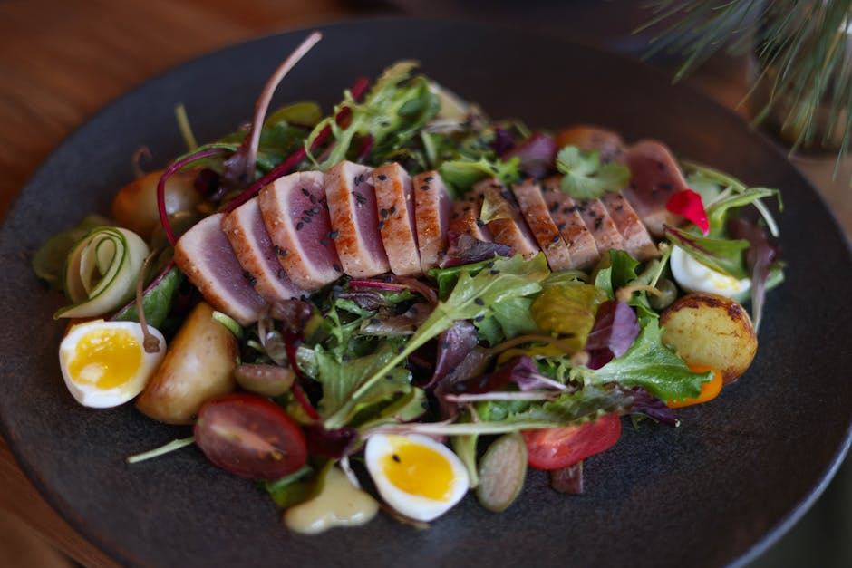

Seared Tuna Niçoise-Style Salad
High-proteinLow-carbGluten-freeDairy-free

Seared Tuna Niçoise-Style Salad delivers 70 g of protein for just 9 g net carbs — ready in about 18 minutes. That's enough high-quality protein in one sitting to clear the leucine threshold for muscle repair.
70 gProtein
9 gNet carbs
22 gFat
4 gFiber
500Calories
Ingredients
- 220 g Fresh tuna steak
- 2 Large eggs (hard-boiled)
- 80 g Green beans
- 80 g Cherry tomatoes
- 20 g Black olives
- 1 tbsp Olive oil & red wine vinegar
- Dijon, salt & pepper, to taste
Equipment
- non-stick skillet
Method
- Sear the seasoned tuna 1-2 min per side for rare, or longer to taste; rest then slice.
- Blanch the green beans 2-3 min and cool under cold water.
- Arrange beans, halved tomatoes, olives and quartered eggs; top with the tuna.
- Whisk oil, vinegar and Dijon into a dressing and spoon over.
Storage & make-ahead
Best assembled fresh. Prep the components up to 2 days ahead, keep chilled, and combine just before eating.
Tip
A protein-dense take on the French classic, with the potatoes left out to keep carbs low.
Full nutrition (estimated, per serving): 500 kcal · 70 g protein · 9 g net carbs · 22 g fat (6.5 g sat) · 4 g fiber · 5 g sugar · 990 mg sodium. Allergens: Egg, Fish. Macros are realistic estimates from standard food-composition values; brands and portions vary.
Get the full cookbook (PDF) — 100 recipes, 3 meal plans & the science →